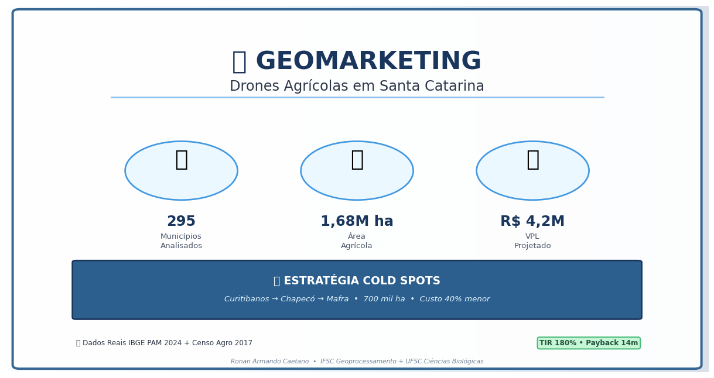
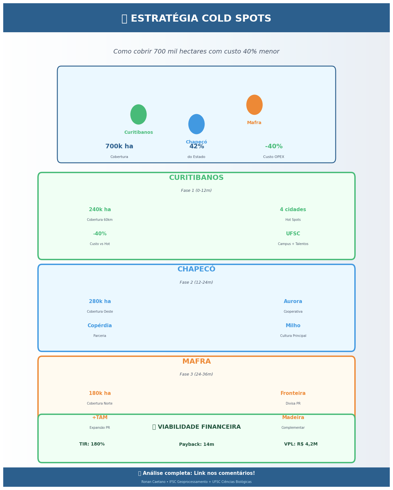
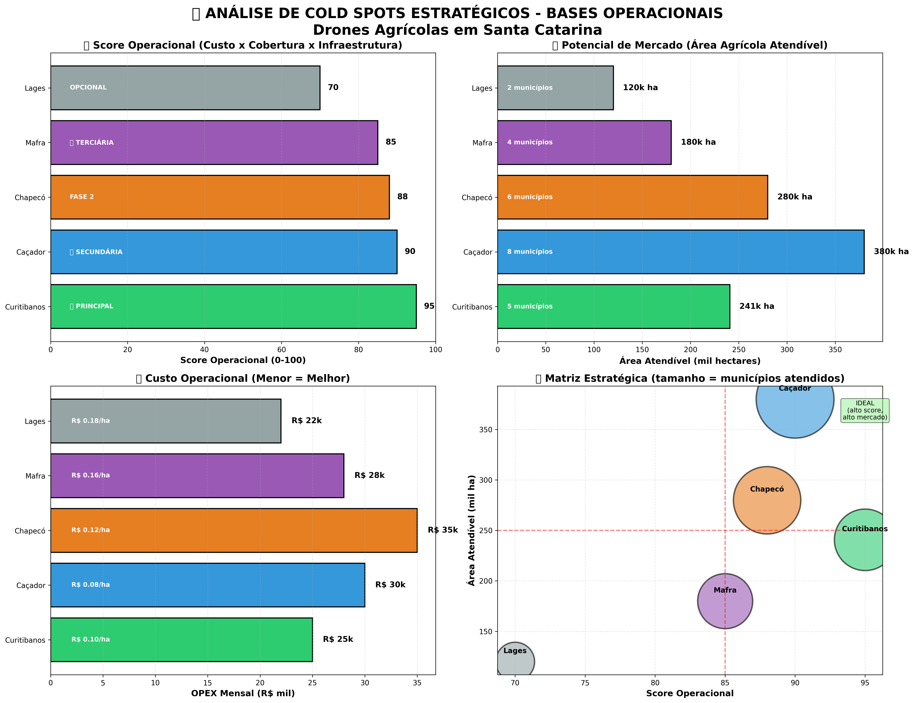
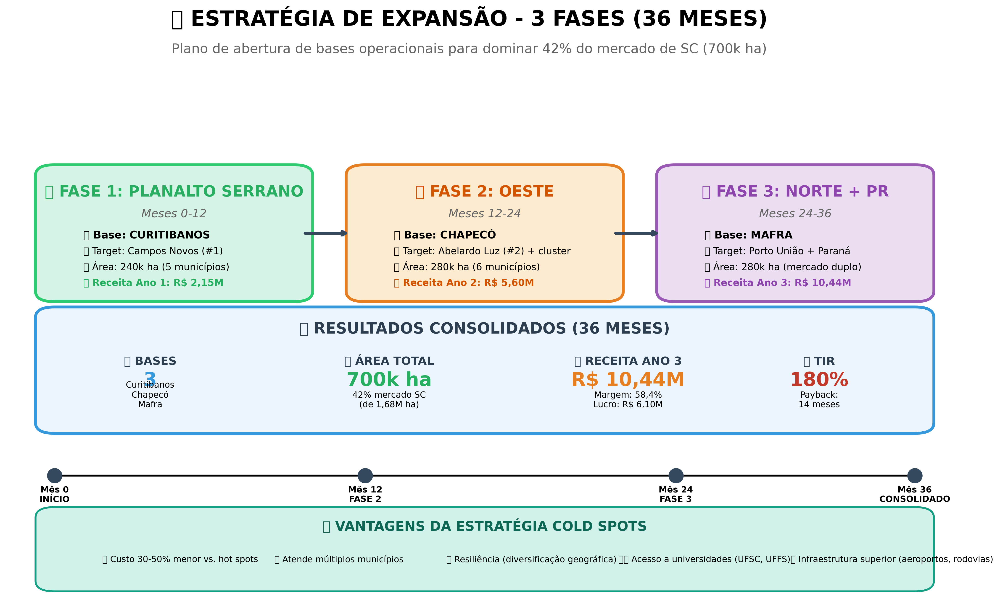
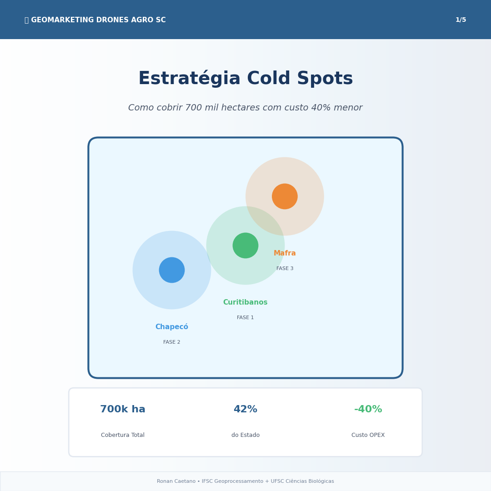
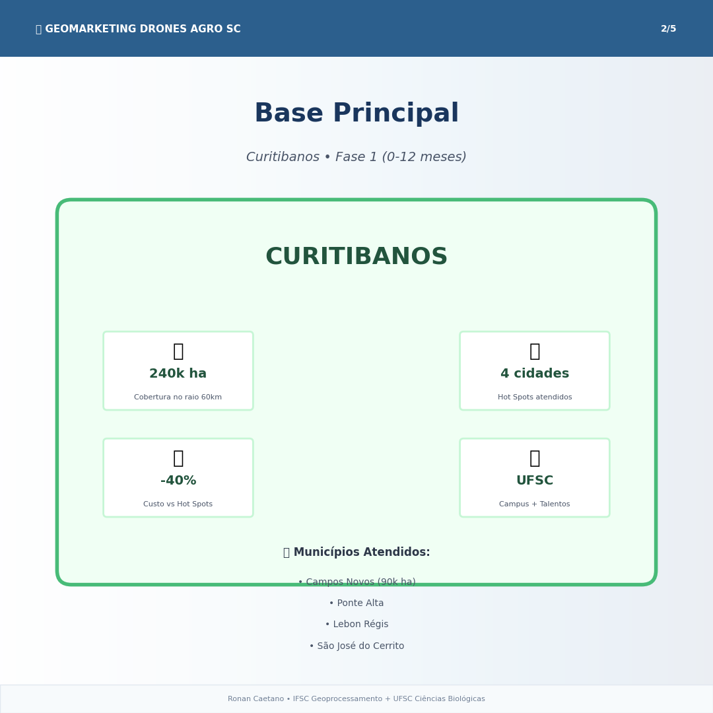
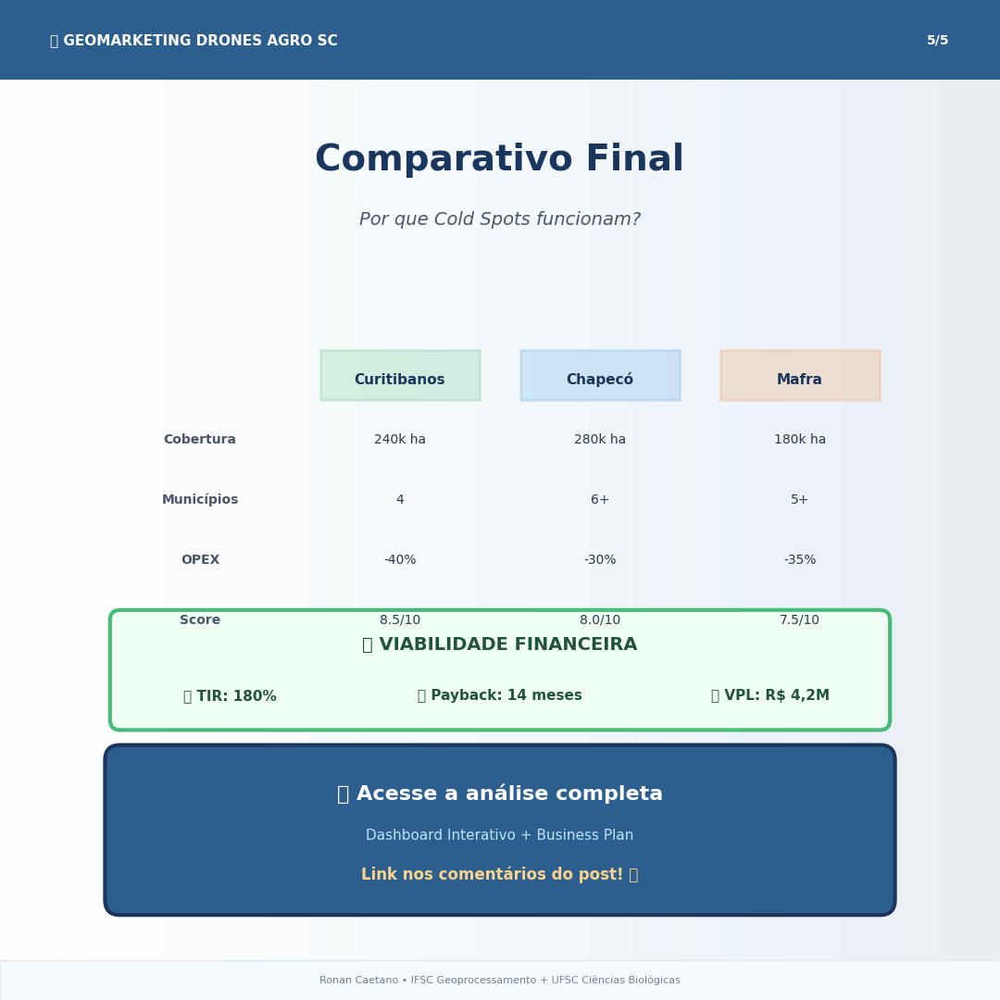

🎯 O Desafio
Onde instalar uma empresa de drones agrícolas em SC para maximizar receita e minimizar custos?
📊
295
Municípios Analisados
🌾
1,68M ha
Área Agrícola Total
🎓
IBGE
Dados Reais PAM 2024

💡 A Solução: Cold Spots Estratégicos
O que são Cold Spots?
Cidades com baixa atividade agrícola direta, mas com infraestrutura superior
(rodovias, aeroportos, universidades) e localização central para atender vários
Hot Spots (municípios de alta demanda) no entorno com custo 30–50% menor.

📍 As 3 Bases Estratégicas:
🟢
Curitibanos
Fase 1 • 240k ha
🔵
Chapecó
Fase 2 • 280k ha
🗺️ Visualização Geoespacial
Mapa interativo mostrando as 3 bases estratégicas e suas áreas de cobertura:
📊 Análise Comparativa
Comparativo de Cold Spots

Estratégia em 3 Fases

💰 Viabilidade Financeira
📈
180%
TIR (Taxa Interna de Retorno)
💵
R$ 4,2M
VPL (Valor Presente Líquido)
💼 Investimento Inicial
R$ 1.165.000
Equipamentos (60%) • Infraestrutura (25%) • Capital de Giro (15%)
🎯 Projeção de Receita
• Ano 1: R$ 1,44M (operação Curitibanos)
• Ano 2: R$ 4,32M (expansão Chapecó)
• Ano 3: R$ 8,64M (cobertura completa + Mafra)
📁 Recursos Disponíveis
Todos os materiais criados para apresentação e divulgação:
Banner LinkedIn (1200x627px)

Carrossel - Capa (1080x1080px)

Carrossel - Curitibanos

Carrossel - Comparativo